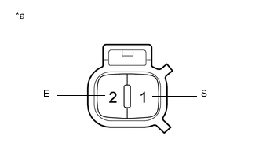

PROCEDURE
INSPECT LEVEL WARNING SWITCH ASSEMBLY
Tech Tips
This check should be performed with the level warning switch assembly installed on the washer jar.

| *a | Component without harness connected (Level Warning Switch Assembly) |
Fill the washer jar with washer fluid.
Measure the resistance according to the value(s) in the table below.
| Standard Resistance | ||||||||
|---|---|---|---|---|---|---|---|---|
|
Tech Tips
*: The level warning switch assembly begins operating when the fluid volume is 600 to 800 cc (36.6 to 48.8 cu.in.) depending on the vehicle condition.
If the result is not as specified, replace the level warning switch assembly.